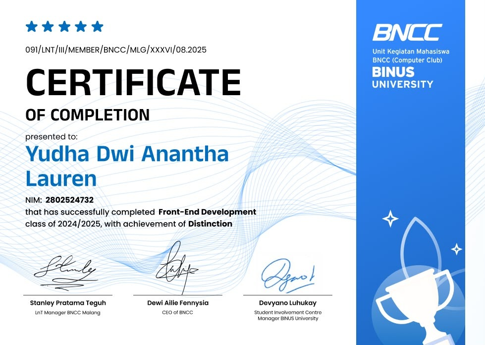

Engineering software with an adversarial security mindset.
Saya Yudha Dwi Anantha Laurens, mahasiswa Computer Science (Semester 5) dengan fokus mobility Cyber Security di Universitas Bina Nusantara. Membangun aplikasi web full-stack yang tangguh, aman, dan berorientasi pada pemecahan masalah nyata.
Fondasi teknis dan minat riset
Tentang Saya
Halo! Saya Yudha Dwi Anantha Laurens. Perjalanan saya di dunia teknologi berangkat dari rasa ingin tahu bagaimana sebuah sistem beroperasi di balik layar — dari arsitektur frontend yang intuitif, API backend yang efisien, hingga cara melindungi integritas data pengguna dari potensi eksploitasi.
Saat ini saya menempuh semester 5 Computer Science di Universitas Bina Nusantara dan mendalami program mobilitas Cyber Security. Saya terbiasa mengombinasikan kebiasaan coding yang bersih (clean code) dengan prinsip keamanan defensif (secure by design).
Download Resume Lengkap (PDF)Bidang Minat & Keahlian
Application & Network Security
Memahami pencegahan OWASP Top 10, autentikasi aman, dan security auditing.
Modern Full-Stack Development
Membangun antarmuka interaktif dan arsitektur API terstruktur dengan Node.js, React, dan Laravel.
Project
Semua repositori di GitHubResQ-Food Platform
Platform digital untuk meminimalkan pemborosan pangan (food waste). Menghubungkan gerai makanan dan restoran lokal dengan konsumen untuk menjual produk pangan berlebih berkualitas tinggi dengan potongan harga khusus.
- Pencarian dan penemuan gerai makanan terdekat berbasis lokasi pengguna
- Arsitektur modern Next.js App Router dengan integrasi Tailwind CSS & Vercel
CookieRisk Analyzer
Platform analisis risiko privasi web untuk mendeteksi dan mengaudit third-party cookies otomatis via headless Playwright, scoring ISO 27005 & OWASP Risk Rating, serta audit kepatuhan terhadap UU PDP No. 27/2022 dan GDPR.
AI Handsign Recognition
Aplikasi pengenalan bahasa isyarat menggunakan deep learning dan computer vision real-time melalui webcam untuk membantu aksesibilitas komunikasi.
Library Management System
Sistem informasi perpustakaan terstruktur dengan autentikasi pengguna, manajemen inventaris buku, sistem denda, serta pencarian buku berkategori.
BelanjaRia Online Store
Aplikasi toko online komprehensif mencakup katalog dinamis, state management keranjang belanja, dashboard admin, dan simulasi alur checkout.
Stack teknologi & alat yang digunakan
Frontend Development
Membangun UI responsif, terstruktur semantik, dan mudah diakses.
Backend & Architecture
Pembuatan REST API, logika autentikasi, dan pengolahan data server.
Database & Storage
Perancangan skema relasional, indeksasi, dan query data.
Security & DevOps Tools
Lingkungan pengujian kode, kontrol versi, dan otomasi deploy.
Pengalaman kerja & rekam jejak akademik
Pengalaman Kerja
Content Production & Creative Specialist
Membantu proses produksi visual multimedia untuk klien di berbagai kanal digital, serta terlibat langsung dalam alur operasional photoshoot dan penataan aset branding.
Graphic Designer & Creative Content Intern
Merancang aset visual promosi, materi komunikasi brand, dan konten kreatif yang disesuaikan dengan kebutuhan kampanye berbagai klien perusahaan.
Riwayat Pendidikan
S1 Computer Science
Program Mobility Cyber Security. Fokus pada konstruksi algoritma, struktur data terdistribusi, keamanan jaringan, kriptografi dasar, dan arsitektur piranti lunak.
Pendidikan Menengah Kejuruan
Membangun dasar disiplin kerja, komunikasi profesional tim, dan etos kolaborasi sebelum melanjutkan pendidikan tinggi di bidang ilmu komputer.
Sertifikasi & pencapaian

Front-End Development Certification
Bina Nusantara Computer Club (BNCC) — Class of 2024/2025
Pencapaian penghargaan predikat kehormatan (Distinction) dalam penguasaan perancangan antarmuka web, arsitektur DOM modern, asynchronous JavaScript, serta implementasi standar komponen modern.
Mari terhubung & berkolaborasi
Membuka peluang baru
Saya terbuka untuk kesempatan magang (internship), kolaborasi riset keamanan sistem, maupun pengembangan proyek web modern. Jangan ragu menyapa melalui pesan langsung atau formulir di samping.